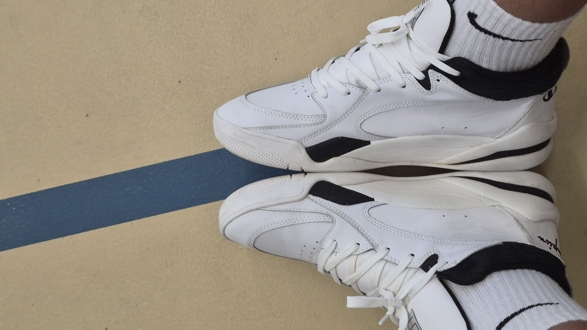
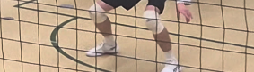
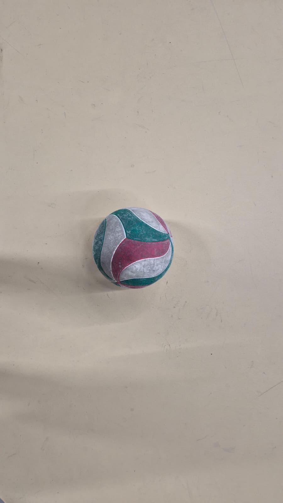

Gum Rubber Sole: Gives you strong grip on wooden gym floors so you never slip.
Useful Gears for Beginners
Volleyball Shoes

Why You Need Them
Regular running shoes are built only for moving forward and can make you twist your ankle when you slide sideways. Real volleyball shoes are built for quick jumps and side-to-side stops.
What to Look For
Good Cushioning: Protects your knees and ankles when landing from high jumps.
Side Support: Wide soles prevent your feet from rolling over sideways.
Clean Sole Rule: Only wear these shoes inside the gym. Walking on street dirt ruins their floor grip.
Protective Knee Pads

Why You Need Them
In volleyball, you will dive and drop to your knees to save low balls. Knee pads absorb hard impacts and stop floor burns on your skin.
Types of Padding
Foam Pads: Lightweight, simple, and great for starting out.
Gel Pads: Softer padding that shapes to your knee and absorbs heavier falls.
Finding the Right Fit
Your knee pad should feel tight so it does not slide down during a jump, but not so tight that it stops blood flow.
A Beginner-Friendly Ball

Official Size
Always choose an official Size 5 indoor volleyball.
Soft-Touch Cover
Pro match balls are very firm and can sting your arms. Look for training balls made with soft foam or soft synthetic leather so passing feels comfortable and does not hurt.
Other Useful Accessories
Passing Sleeves: Soft fabric sleeves you wear on your forearms to reduce the sting of hard hits and avoid floor burns.
Finger Tape: Non-stretchy athletic tape that supports your finger joints when blocking at the net.
Ventilated Gym Bag: A bag with a separate shoe pocket to keep your shoes clean and let sweaty gear dry out.